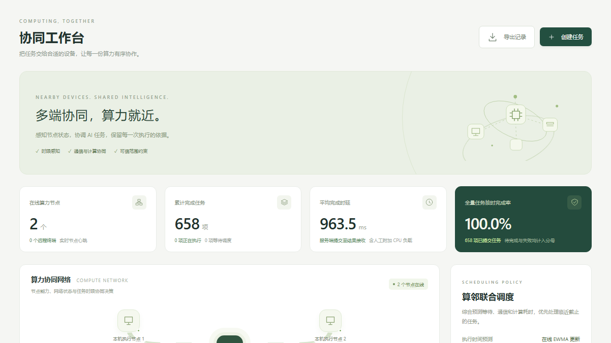

办公巡检事件的任务时限感知与资源协同
场景设计方案
应用层原型与参数化仿真验证
任务集中到达
固定节点产生排队
处理速度不同
其他设备可能空闲
远端计算有传输成本
部分任务限制处理范围
需求定位为待验证假设，尚无实际用户访谈证明
事件文本
时限与范围
记录与导出
筛选与调度
租约与重排
SQLite记录
注册与心跳
本地分类推理
结果与耗时
显式接入设备，任务整体分配，每节点一个执行槽

节点注册与心跳
任务提交和分类
取消与超时重排
原始记录导出
两个工作进程同在本机
尚未验证物理多机收益
先按截止时间排序，再筛选允许处理的在线节点
单位耗时采用 EWMA 更新
0.65旧值 + 0.35新样本
启发式，无最优性保证
单调超时惩罚不改变节点排序
| 情况 | 处理方式 | 边界 |
|---|---|---|
| 节点停止响应 | 25秒租约到期重排 | 最多3次执行尝试 |
| 旧结果迟到 | 校验当前租约 | 可能重复计算 |
| 暂停接收任务 | 停止新任务派发 | 已有任务继续完成 |
| 仅可信节点 | 管理员设定范围 | 没有硬件可信证明 |
共享令牌与HTTP仅用于可信实验网络
30个种子 × 240项任务 × 4种策略 × 3类条件 = 86,400条记录
| 假设条件 | 策略 | 按时完成率 | 平均时延ms |
|---|---|---|---|
| 正常网络 | 算邻联合调度 | 95.3% | 161.0 |
| 正常网络 | 固定单节点 | 38.0% | 1586.2 |
| 正常网络 | 轮询分配 | 80.9% | 379.6 |
| 正常网络 | 随机分配 | 78.0% | 441.3 |
| 受限带宽 | 算邻联合调度 | 50.3% | 943.2 |
| 受限带宽 | 固定单节点 | 3.5% | 12621.7 |
| 受限带宽 | 轮询分配 | 30.6% | 6388.6 |
| 受限带宽 | 随机分配 | 30.0% | 6395.1 |
| 任务突发 | 算邻联合调度 | 71.1% | 487.7 |
| 任务突发 | 固定单节点 | 5.0% | 9767.1 |
| 任务突发 | 轮询分配 | 52.4% | 2613.5 |
| 任务突发 | 随机分配 | 47.7% | 2526.4 |
两个同机进程，四种策略各5轮，每轮16项，共320项正式任务
| 策略 | 按时完成率 | 平均时延ms | 各轮P95均值ms |
|---|---|---|---|
| 固定单节点 | 100.0% | 1352.9 | 2378.8 |
| 轮询分配 | 100.0% | 778.9 | 1413.6 |
| 随机分配 | 100.0% | 800.7 | 1446.5 |
| 算邻联合调度 | 100.0% | 821.0 | 1436.8 |
所有策略均按时完成，当前联合策略没有普遍优势
真实文本分类推理
48条合成训练样本
结果须人工复核
HTTP应用层协同
网络与计算共同估计
普通网络可部署
AI与通信融合
分布式算力协同
未来接入准确遥测
没有6G空口、专网或标准协议栈验证
至少3位实际使用者
记录现有流程与时限
保留反对意见
两至三台物理电脑
低负载与突发对照
失败任务完整保留
独立标注事件集
宏平均F1与漏报率
评估维护成本
低负载场景中，单机可能更合适
| 角色 | 主要责任 | 共同复核 |
|---|---|---|
| 软件工程成员 | 协调器、执行端、界面与接口 | 运行行为与版本 |
| 电子信息工程成员 | 组网、设备配置、网络与断连实验 | 指标和实验口径 |
| 两人共同 | 访谈、模型误差、材料和答辩 | 真实性与AI披露 |
10月底接入真实终端，11月上旬补现场证据
11月12日前完成最终核查与上传
下一步：真实需求、物理多机与实际巡检数据验证
资料：aicomp.cn/tracks/tracks-4/5322.html
ITU-R M.2160-0；Ray Scheduling；KubeEdge Why KubeEdge
代码、材料与合成数据由生成式AI辅助制作，参赛成员须审核并负责